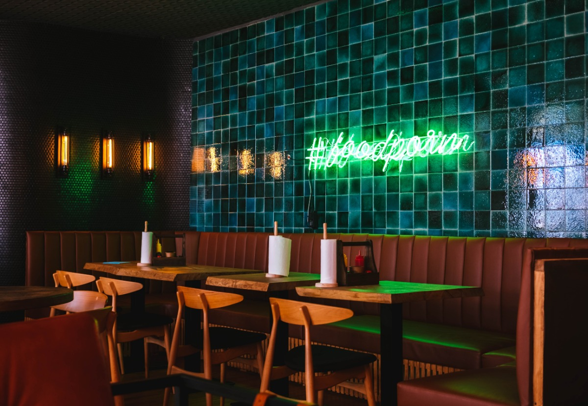

Herzlich Willkommen
In unserem Restaurant findest du traditionelle bayrische Spezialitäten.
Unsere Öffnungszeiten
Mo - Fr: 12.00 - 23.00 Uhr
Sa: 11.00 - 24.00 Uhr
So: 11.00 - 24.00 Uhr
Anfahrt
Unser Restaurant befindet sich in der Goethestrasse 1, 12345 Zufallshausen, Fahren Sie über die A99 und nehmen Sie die Autobahn. Dort finden Sie unser schönes Restaurant.
Tageskarte
| 1 |
Schweinshaxe |
18,60€ |
Knusprige Schweinehaxe, dazu Kartoffelknödel mit Bröselbutter & Dunkelbiersoße |
| 2 |
Rahmschwammer |
12,00€ |
Rahmschwammerl mit Steinpilzen, Pfifferlingen & Champignons, dazu Semmelknödel |
| 3 |
Entenbraten |
14,50€ |
Entenrouladen mit Rotkraut & Speckknödel |
| 4 |
Wiener Schnitzel |
20,00€ |
Wiener Schnitzel vom Liousin-Kalb aus der Ost-Steiermark |
| 5 |
Maultaschen Pfanne |
7,00€ |
Selbstgemachte Maultaschen geröstet mit Ei & Kartoffelsalat |
| 6 |
Käse Spätzle |
8,50€ |
Hausgemachte Kässpätzle mit Zwiebelschmelze und Blattspinat (vegetarisch) |
Öffnen Sie unsere Tageskarte als
PDF.
Team